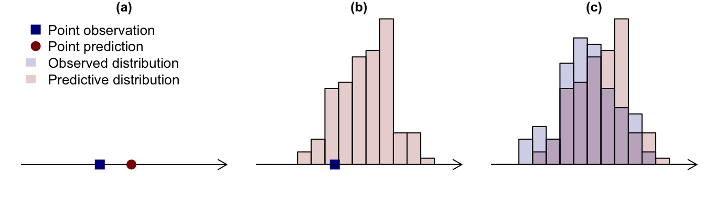
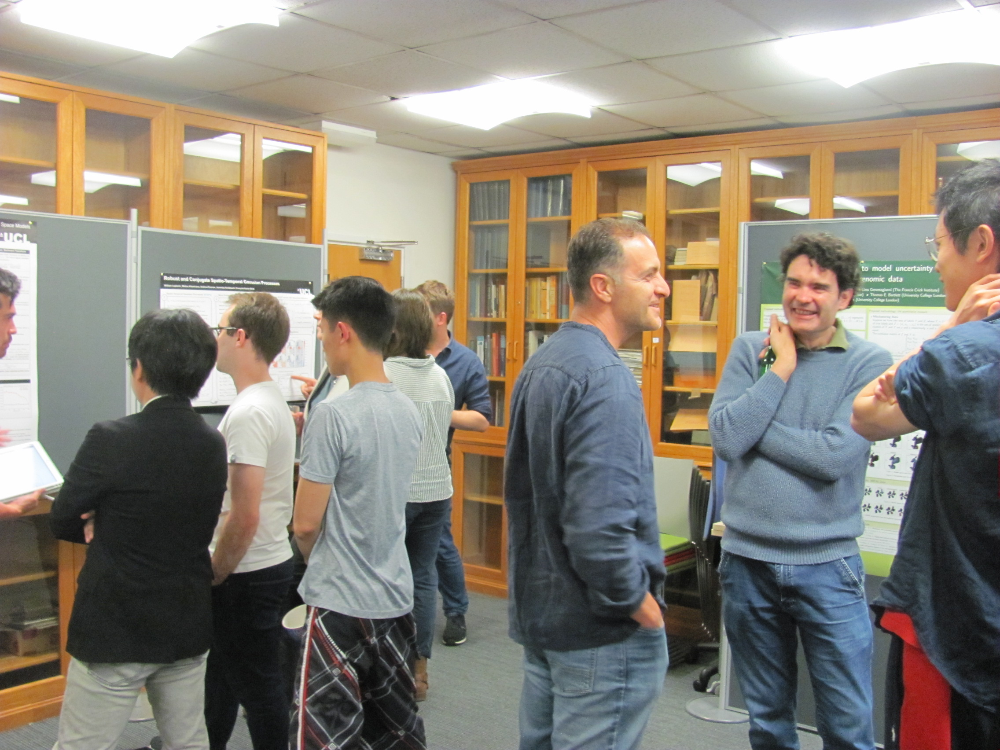

Prediction, climate, statistics and machine learning: the 2025 IMSS symposium and training workshop
Featured
IMSS
The UCL Institute of Mathematical and Statistical Sciences (IMSS) held its annual training workshop and symposium on 9th and 10th June 2025. This article contains meeting reports for both events, as well as some insights into the condition of the UCL estate.
I write this on 18th June 2025, during a heatwave. The temperature in London today reached 29.3 degrees in St James’ Park. Unfortunately I wasn’t in the park: I was in my office, where the temperature was even warmer because the air conditioning has been broken for years.
Tomorrow, the outside temperature is forecast to reach 32 degrees. I predict that the temperature in my office will be 34 degrees.
You may think I’m exaggerating: maybe you predict that my office temperature will be 22 degrees, because UCL is one of the world’s top universities and wouldn’t allow the staff offices to get too hot. That’s probably a conversation for another time …
Now let’s wind the clock forward 24 hours, and assume for the sake of argument that the measured temperature in my office turned out to be 26 degrees. Your prediction was clearly better than mine: your absolute prediction error is |26-22|=4 degrees, whereas mine is |26-34|=8 degrees.
Does this mean you’re a better forecaster than me? Well: (I would say this, but …) no, obviously not. Maybe you just got lucky this time. To determine who is the better forecaster, each of us would have to make a large number of predictions and calculate an overall measure of performance after the corresponding values have materialised. Such a measure could be the mean of the absolute prediction errors as calculated above; or something else such as the mean squared prediction error. Either way, the measure we use should have the properties that (i) it takes non-negative values (ii) smaller values are better because they correspond to smaller errors ‘on average’.
Assessing the quality of predictions
All of this seems pretty obvious. However, it is a starting point for a discussion about how to measure the quality of predictions? This was the topic of the UCL Institute of Mathematical and Statistical Sciences (IMSS) annual training workshop for 2025, held on Monday 9th June. The topic is not just relevant to the temperature in my office, of course: anyone, or any organisation, who is making predictions should be able to demonstrate their credibility.
The workshop was led by Prof Thordis Thorarinsdottir of the University of Oslo, who is one of the top experts globally in this area. It attracted around 25 attendees from inside and outside UCL, with ranges of experience ranging from Masters students to full professors (who were made to sweat in some of the coding exercises!).
If the question were restricted just to a comparison of predicted values versus the subsequent observations, then this topic would — one would think — be fairly simple: the ‘best’ forecaster will have the lowest long-run average value of some scoring function such as absolute or squared error.
Things get more complicated, however, if the forecaster is asked to assess the uncertainty in their prediction — for example, by predicting a probability density function (pdf) instead of a single value. For example, in the context of my office (which, as you will understand, interests me a lot): I’m not sure that the temperature tomorrow will be 34 degrees. I think it could be anywhere between 32 and 36 degrees. To capture this uncertainty, perhaps I could modify my prediction by saying “tomorrow’s office temperature will be drawn from a normal distribution with mean 34 degrees and standard deviation 1 degree”.
Thinking about it, I’m now slightly worried that I’ll look silly if my office temperature tomorrow falls outside the range (32, 36) degrees. To avoid this, maybe I’ll modify my prediction even further by saying “tomorrow’s office temperature will be drawn from a normal distribution with mean 34 degrees and standard deviation 100 degrees”. That way, even if the actual temperature is just 20 degrees, I can still claim that I was right because my prediction allowed such a huge range of temperatures. This kind of behaviour from forecasters is called hedging — and it’s clearly not very helpful to users of the predictions.
Thordis explained that hedging can be discouraged if forecasters’ performance is measured using proper scoring rules, which have the property that if an observation is sampled from a distribution with probability density function f(·), then the expected score is minimised by predicting f(·) rather than any other distribution. That way, if I try to hedge my predictions as described above but you issue predictions with more realistic standard deviations, you should get a better (i.e. lower) score than me in the long run. I’ll therefore be exposed as a fraud, and quite right too.
One of the take-home messages from the workshop was therefore the need to use proper scoring rules when assessing prediction quality, as implemented (for example) in the ScoringRules package for users of the R programming environment. Moreover, there are some interesting settings (e.g. relating to predictions of extreme events) where ‘obvious’ approaches do not correspond to proper scoring rules. This shows that assessing the quality of predictions can be more difficult than you might think!
The use of proper scoring rules also encourages forecasters to issue probabilistic predictions that are calibrated. In this context, “calibration” is the requirement that among a large number of predictions claiming that a particular event will occur with probability, say, 0.7, the event should subsequently have occurred 70% of the time. It is possible, however, for different sets of predictions to be calibrated. For example, if you’re predicting the temperature in my office then you might predict a different distribution each day depending on the weather forecast, but you may have a friend who predicts the same distribution each day, based on the overall distribution of temperatures throughout the year. In the long term, both sets of predictions will be calibrated but yours will usually be sharper — that is, your distributions will have smaller standard deviations than your friend’s, so that your predictions are more precise. Sharpness is therefore a desirable property, but only if your predictions are calibrated.
Thordis also discussed situations where both the prediction and the subsequent observation take the form of probability distributions, and showed that in this case the quality of the prediction can be assessed using a divergence measure between the observed and predicted distributions. The choice of divergence measure needs care, however; and, in general, measures can (and should) be constructed by starting with a proper scoring rule. In fact, proper scoring rules provide a unified setting for situations where one is comparing a point prediction with a point observation, a predictive distribution with a point observation, or a predictive distribution with an observed distribution (see Figure 1).
In the final part of the workshop, Thordis discussed the training of machine learning algorithms, which often focus on prediction so that it is natural to train them by optimising proper scoring rules. These techniques are becoming a standard part of the toolkit for statisticians and data scientists, alongside more familiar ideas such as maximum likelihood and least squares estimation.
From predictions to climate
On the day after the workshop, Thordis was back — this time as the keynote speaker for the 2025 IMSS annual symposium, which was on the topic of Some statistical contributions in climate research. Her talk covered a wide range of topics, including the evaluation of the complex computer simulators that are used to produce projections of future climate under specified scenarios of global socioeconomic development and the associated greenhouse gas emissions; the use of statistical or stochastic models to produce simulations of future climate at a finer spatial resolution than is available from archives of climate simulator outputs; and the need to account for uncertainty in future projections when using them to support decision-making and strategic planning.
The symposium also hosted three other speakers. Henry Moss (Lancaster University) and Laura Mansfield (University of Oxford) highlighted different applications of machine learning in climate science. Henry’s talk examined the use of neural networks to improve the computational efficiency of statistical models based on Gaussian processes for very high-dimensional data, with application to wind speed forecasting at a spatial resolution of 250⨉250m2 throughout Switzerland — for which statistical models were required for images with 7.2 million pixels (see Figure 2).
{kind=link}
Laura also discussed the issue of spatial resolution, but in a different context: climate simulators represent the relevant dynamical equations on a grid of latitude-longitude values, with a resolution that may be on the order of 100⨉100km2 when running simulations for the entire globe. These simulators cannot capture directly the effects of potentially important processes taking place within grid cells: convection within clouds, which can generate precipitation, is an example of such a process. Laura’s proposed solution was to employ machine learning techniques to learn about these fine-scale effects using a small number of very high-resolution simulations. A key challenge for this technology, which is relatively new, is to quantify and propagate the associated uncertainties.
The remaining talk, which focused on statistical rather than machine learning ideas, was from James Salter (University of Exeter) who discussed the calibration of computer simulators. “Calibration” here has a different meaning to its usage above, and refers to the process of determining the values of unknown quantities (“parameters”) that appear in the simulator equations. For example, in the component of a climate simulator handling the exchange of water and energy between the atmosphere and land, parameters might include “rate of leaf growth” and “temperature below which leaves are dropped”. James discussed the use of history matching for simulator calibration. In this approach, simulators are run for a small number of parameter combinations: statistical emulators, often based on Gaussian processes, are then used to estimate the outputs that would have been obtained for different parameter values — but without the expense of running the full simulator again. This in turn allows some regions of the parameter space to be “ruled out”, in the sense that the emulated outputs are inconsistent with corresponding observations. However, Gaussian process emulators usually require experts to specify informative prior distributions for certain covariance matrices: this is hard to do. To resolve this problem, James proposed an alternative procedure in which experts are presented with the emulator outputs for each parameter combination and asked to judge whether or not the outputs are considered “plausible”: the results of these judgements can be incorporated formally into the subsequent statistical analysis in such a way as to avoid specifying priors on covariances.
The symposium, which was organised by members of the Statistical Science department’s Environmental Statistics research theme, highlighted some of the many ways in which statistical and machine learning techniques are contributing to our understanding of climate and its impacts. Special thanks are due to Amanda Gallant for her help with the organisation — and, in particular, for her quick thinking when a water leak in the ceiling caused a short-circuit to the electrical supply in the lecture theatre with dramatic effect (another insight into life at one of the world’s top universities). The venue had to be evacuated in the middle of one of the presentations: Amanda saved the day by locating an alternative venue immediately.

After the excitement had died down and the symposium had concluded without further incident, a reception was held in the Statistical Science department: this allowed plenty of opportunities for discussion, and also included a poster session where staff and students were able to showcase their recent research.
And finally …
If you’re at all interested: the temperature in my office on 19th June had reached 29.4 degrees by 3pm. I don’t know what happened after that: I decided that it would be wise to ship out and work elsewhere.